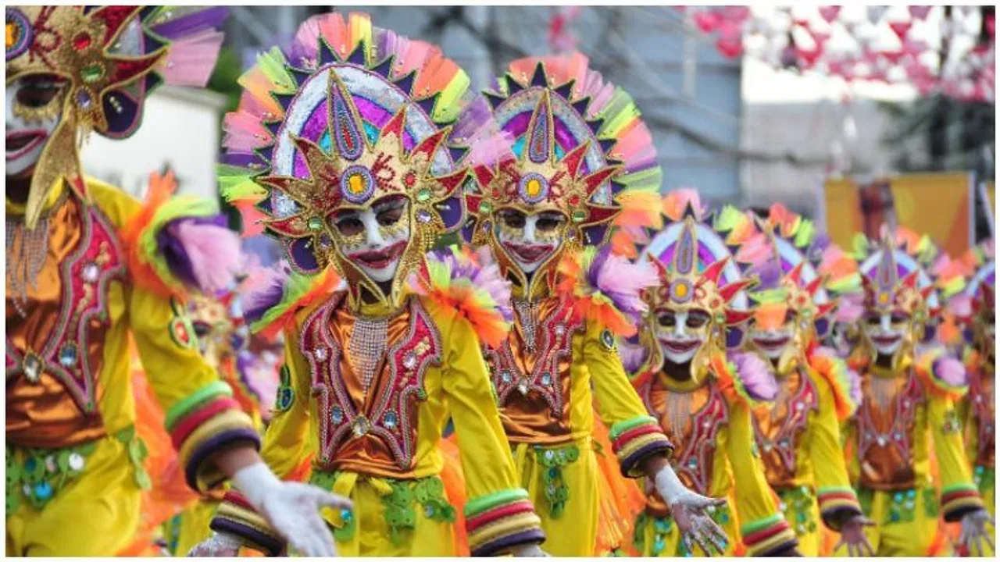

Welcome to Puducherry!

Puducherry, formerly known as Pondicherry, is a Union Territory of India located on the southeastern coast. Known
for its distinctive blend of French and Indian cultures, Puducherry offers a unique cultural experience,
characterized by its colonial heritage, vibrant festivals, and serene beaches.
Festivals in Puducherry are celebrated with great enthusiasm and reflect its diverse cultural heritage. Pongal,
the Tamil harvest festival, is a major celebration marked by traditional rituals, feasts, and decorations.
Bastille Day, celebrated on July 14th, reflects the region's French heritage with parades, cultural events, and
fireworks. Diwali, Christmas, and Eid are also widely celebrated, showcasing Puducherry's religious diversity and
communal harmony.
Puducherry’s cuisine is a delightful fusion of Tamil and French culinary traditions. Tamil influences are evident
in dishes like dosa, idli, and sambar, while the French influence can be seen in baguettes, croissants, and coq au
vin. Seafood is a staple, with dishes like prawn curry and fish fry being particularly popular. The region’s
cuisine also includes a variety of creole dishes that blend local ingredients with French cooking techniques,
creating a unique gastronomic experience.
Music and dance in Puducherry reflect its multicultural heritage. Traditional Tamil music and dance forms, such as
Bharatanatyam and Carnatic music, are prevalent and performed during festivals and cultural events. The influence
of French culture is also evident in the region’s art and music scenes, with numerous cultural festivals
showcasing a blend of Indian and European styles. The annual Puducherry Heritage Festival is a major event that
celebrates the region’s diverse cultural heritage through music, dance, and art exhibitions.
Puducherry’s architectural heritage is a testament to its colonial past and cultural diversity. The French
Quarter, with its well-preserved colonial buildings, cobblestone streets, and vibrant bougainvillea, offers a
charming glimpse into the region’s French heritage. Iconic landmarks like the Basilica of the Sacred Heart of
Jesus, the Immaculate Conception Cathedral, and the French War Memorial reflect the architectural influence of
French colonization. The Tamil Quarter, with its traditional houses and vibrant markets, showcases the region’s
indigenous architectural styles.
Handicrafts in Puducherry are known for their craftsmanship and artistic excellence. The region is famous for its
handmade paper, pottery, and textile products. Auroville, an experimental township located near Puducherry, is
renowned for its unique crafts and artisanal products, including handcrafted candles, incense, and eco-friendly
items. These crafts reflect the creativity and skill of local artisans, preserving the region’s cultural heritage.
The natural beauty of Puducherry is characterized by its serene beaches, lush gardens, and tranquil backwaters.
Promenade Beach, Paradise Beach, and Auroville Beach are popular destinations for tourists and locals alike,
offering opportunities for relaxation and water sports. The Botanical Garden and the serene backwaters provide
picturesque settings for nature lovers, adding to the region’s charm.
Overall, Puducherry’s culture is a harmonious blend of French and Indian influences, offering a unique and
enriching experience for visitors. Its vibrant festivals, delectable cuisine, classical and contemporary arts, and
architectural heritage reflect the region’s diverse and multicultural identity. Puducherry invites travelers to
immerse themselves in its rich cultural tapestry, enjoy its scenic beauty, and experience its warm hospitality.